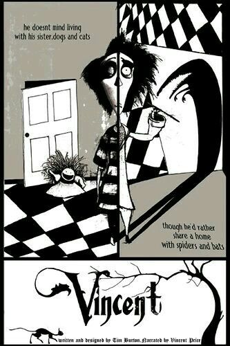

Ficha

Año: 1982 Duración: 6 minutos Dirección: Tim Burton Guion: Tim Burton Producción: Walt Disney Productions Género: Animación · Fantasía oscura · Stop motion Narración: Vincent Price

Año: 1982 Duración: 6 minutos Dirección: Tim Burton Guion: Tim Burton Producción: Walt Disney Productions Género: Animación · Fantasía oscura · Stop motion Narración: Vincent Price
Vincent Malloy es un niño de siete años que lleva una vida aparentemente tranquila, pero que imagina ser el famoso actor de películas de terror Vincent Price. Su imaginación transforma situaciones cotidianas en escenas oscuras inspiradas en el terror clásico y en los relatos de Edgar Allan Poe. Mientras su madre intenta mantenerlo alejado de sus fantasías macabras, Vincent se sumerge cada vez más en un mundo donde experimenta con su perro, imagina terribles destinos para sus familiares y se convierte en protagonista de sus propias historias de horror. El límite entre la realidad y la imaginación comienza a desaparecer, convirtiendo a Vincent en un personaje solitario, extraño y completamente fascinado por el mundo que ha construido en su cabeza.
Un niño de siete años cuya imaginación está obsesionada con el terror y con convertirse en Vincent Price. Su mundo interior es mucho más oscuro que su apariencia cotidiana.
El ídolo de Vincent y la voz que narra la historia. Su presencia conecta directamente el cortometraje con el cine de terror clásico que inspiró a Burton.
Representa el mundo cotidiano y racional que intenta mantener a Vincent alejado de sus fantasías.
Los personajes que aparecen alrededor de Vincent terminan transformándose, dentro de su imaginación, en protagonistas de sus macabras historias.
Dirección: Tim Burton Guion: Tim Burton Narración: Vincent Price Producción: Rick Heinrichs Animación: Stephen Chiodo Dirección de fotografía: Victor Abdalov Música: Ken Hilton
Vincent nació mientras Burton trabajaba como artista conceptual en Walt Disney Productions. El proyecto comenzó como una adaptación de un poema que el propio Burton había escrito y se convirtió en una oportunidad para experimentar con la animación stop motion. El cortometraje fue realizado con figuras y escenarios físicos fotografiados cuadro a cuadro. Su estética en blanco y negro y sus composiciones inspiradas en el expresionismo alemán ayudaron a establecer muchos de los elementos visuales que posteriormente se convertirían en característicos del universo de Burton. La producción se realizó en aproximadamente dos meses y tuvo un presupuesto de 60.000 dólares.
Vincent Price fue uno de los grandes referentes de Tim Burton. Su participación como narrador convirtió al cortometraje en un homenaje directo al actor.
Burton originalmente escribió Vincent como un poema que podía funcionar como un libro infantil.
El cortometraje fue uno de los primeros trabajos completos de Burton y ayudó a demostrar a Disney las posibilidades de su particular estilo visual.
Las fantasías de Vincent están fuertemente inspiradas en el universo literario de Edgar Allan Poe.
La idea de un niño que experimenta con su mascota anticipa uno de los conceptos centrales de Frankenweenie.
PALETA Blanco, negro y diferentes tonos de gris. ESTÉTICA Gótica, expresionista y teatral. PERSONAJES Figuras delgadas, alargadas y de aspecto caricaturesco. ESCENARIOS Interiores domésticos que se transforman en espacios siniestros a través de la imaginación. ILUMINACIÓN Alto contraste, sombras profundas y una estética inspirada en el cine de terror clásico. REFERENCIAS Vincent Price · Edgar Allan Poe · Expresionismo alemán · Cine de terror clásico.